전산응용토목제도기능사 (2010-07-11 기출문제)
1과목: 토목제도(CAD)
1. 철근콘크리트 부재의 경우 사용할 수 있는 전단철근의 형태로 옳지 않은 것은?
- 스터럽과 굽힘철근의 조합
- 주철근에 15° 이하의 각도로 설치되는 스터럽
- 주인장 철근에 30° 이상의 각도로 구부린 굽힘철근
- 주인장 철근에 45° 이상의 각도로 설치되는 스터럽
(정답률: 59%)

2. 콘크리트의 배합설계에서 실제 시험에 의한 설계기준강도(ƒck)와 압축강도의 표준편차(s)를 구했을 때 배합강도(ƒcr)를 구하는 방법으로 옳은 것은? (단, ƒcr≤35㎫인 경우)
- ƒcr=ƒck＋1.34s[㎫], ƒcr=(ƒck-3.5)＋2.33s[㎫]의 두 식으로 구한 값 중 작은 값
- ƒcr=ƒck＋1.34s[㎫], ƒcr=(ƒck-3.5)＋2.33s[㎫]의 두 식으로 구한 값 중 큰 값
- ƒcr=ƒck＋1.64s[㎫], ƒcr=(0.85ƒck＋3s[㎫]의 두 식으로 구한 값 중 작은 값
- ƒcr=ƒck＋1.64s[㎫], ƒcr=(0.85ƒck＋3s[㎫]의 두 식으로 구한 값 중 큰 값
(정답률: 62%)
3. 스터럽과 띠철근에서 90° 표준갈고리에 대한 설명으로 옳은 것은?
- D16 철근은 구부린 끝에서 철근지름의 6배 이상 연장하여야 한다.
- D19 철근은 구부린 끝에서 철근지름의 3배 이상 연장하여야 한다.
- D22 철근은 구부린 끝에서 철근지름의 6배 이상 연장하여야 한다.
- D25 철근은 구부린 끝에서 철근지름의 3배 이상 연장하여야 한다.
(정답률: 30%)
4. 콘크리트의 강도에 대한 설명으로 옳지 않은 것은?
- 재령 28일의 콘크리트의 압축강도를 설계기준강도로 한다.
- 콘크리트의 인장강도는 압축강도의 약 1/10~1/13 정도이다.
- 콘크리트의 휨강도는 압축강도의 약 1/5~1/8 정도이다.
- 인장 강도는 도로 포장용 콘크리트의 품질 결정에 이용된다.
(정답률: 59%)
5. 콘크리트용 잔골재의 입도에 관한 사항으로 옳지 않은 것은?
- 잔골재는 크고 작은 알이 알맞게 혼합되어 있는 것으로서 표준 범위 내인가를 확인한다.
- 입도가 잔골재의 표준 입도의 범위를 벗어나는 경우에는 두 종류 이상의 잔골재를 혼합하여 입도를 조정하여 사용한다.
- 일반적으로 콘크리트용 잔골재의 조립률의 범위는 5.0 이상인 것이 좋다.
- 조립률은 골재의 입도를 수량적으로 나타내는 한 방법이다.
(정답률: 66%)
6. b=400㎜, a=100㎜인 단철근 직사각형보에서 ƒck = 25㎫ 일 때 콘크리트의 전압축력을 강도설계법으로 구한 값은? (단, b:부재의 폭(㎜), ƒck:콘크리트설계기준강도, a:콘크리트의 등가 직사각형 응력 분포의 깊이(㎜)
- 700KN
- 800KN
- 850KN
- 1000KN
(정답률: 44%)
7. 토목 재료로서의 콘크리트 특징으로 옳지 않은 것은?
- 부재나 구조물의 크기를 마음대로 만들 수 있다.
- 압축 강도와 내구성이 크다.
- 재료의 운반과 시공이 쉽다.
- 압축 강도에 비해 인장 강도가 크다.
(정답률: 73%)
8. 철근콘크리트 보를 강도 설계법으로 설계할 경우 필요한 가정으로 옳지 않은 것은?
- 보가 파괴를 일으킬 때 압축 축 콘크리트 표면에서의 최대 변형률은 0.003이다.
- 철근과 콘크리트 사이의 부착은 완전하며 그 경계면에서 상대활동은 일어나지 않는다.
- 보의 극한상태에서 휨 모멘트를 계산할 때 콘크리트의 인장강도를 고려한다.
- 보에서 임의의 단면이 휨을 받기 전에 평면이었다면 휨변형을 일으킨 뒤에도 평면을 유지한다.
(정답률: 54%)
9. 원칙적으로 겹침이음을 하여서는 안 되는 철근은?
- D19 미만의 철근
- D25 이상의 철근
- D32 이하의 철근
- D35 초과의 철근`
(정답률: 78%)
10. 수밀 콘크리트를 만드는데 적합하지 않은 것은?
- 단위수량을 되도록 적게 한다.
- 물-결합재비를 되도록 적게 한다.
- 단위 굵은 골재량을 되도록 크게 한다.
- AE제를 사용하지 않음을 원칙으로 한다.
(정답률: 53%)
11. 철근 구부리기에 대한 설명으로 옳지 않은 것은?
- 철근은 상온에서 구부리는 것을 원칙으로 한다.
- 콘크리트 속에 일부가 묻혀 있는 철근은 현장에서 임의로 구부리지 않도록 한다.
- 구부린 철근을 큰 응력을 받는 곳에 배치하는 경우에는 구부림 내면 반지지름을 더 작게 하여야 한다.
- D16 이하의 스터럽과 띠철근으로 사용하는 표준 갈고리의 구부림 내면 반지름은 철근 공칭지름의 2배 이상으로 하여야 한다.
(정답률: 49%)
12. 철근을 소요두께의 콘크리트로 덮는 이유에 대한 설명으로 가장 거리가 먼 것은?
- 철근의 산화를 방지하기 위하여
- 시공의 편의를 위하여
- 부착응력을 확보하기 위하여
- 내화적으로 만들기 위하여
(정답률: 61%)
13. 압축을 받는 이형철근의 정착길이에서 지름이 6㎜ 이상이고, 나선간격이 100㎜ 이하인 나선철근으로 둘러싸인 압축 이형철근의 기본정착길이에 대한 감소량은?
- 20%
- 25%
- 27%
- 33%
(정답률: 48%)
14. 기둥에 대한 정의로 옳은 것은?
- 높이가 단면 최소 치수의 1배 이상인 압축재
- 높이가 단면 최소 치수의 2배 이상인 압축재
- 높이가 단면 최소 치수의 3배 이상인 압축재
- 높이가 단면 최소 치수의 4배 이상인 압축재
(정답률: 49%)
15. 주철근을 2단 이상으로 배치할 경우에는 그 연직 순간격은 최소 얼마 이상으로 하여야 하는가?
- 15㎜
- 20㎜
- 25㎜
- 30㎜
(정답률: 62%)
16. 강구조의 특징에 대한 설명으로 옳지 않은 것은?
- 내구성이 우수하다.
- 재료의 균질성을 가지고 있다.
- 차량 통행에 의하여 소음이 발생되지 않는다.
- 다양한 형상과 치수를 가진 구조로 만들 수 있다.
(정답률: 81%)
17. 폭 b=400㎜, 유효 깊이 d=500㎜인 단철근 직사각형 보에서 인장 철근비는? (단, 철근의 단면적 As=5000mm2)
- 0.015
- 0.025
- 0.035
- 0.045
(정답률: 61%)
18. 토목 구조물에서 콘크리트 구조, 강 구조, 콘크리트와 강재의 합성 구조로 나누는 것은 무엇에 따른 분류인가?
- 사용목적에 따른 분류
- 사용재료에 따른 분류
- 시공방법에 따른 분류
- 시공비용에 따른 분류
(정답률: 54%)
19. 독립 확대 기초의 크기가 2m x 3m이고 허용 지지력이 20KN/m2일 때, 이 기초가 받을 수 있는 하중의 크기는?
- 60KN
- 80KN
- 120KN
- 150KN
(정답률: 85%)
20. 세계 토목 구조물의 역사에 대한 설명 중 틀린 것은?
- 기원전 1~2세기경 아치교의 발달 - 프랑스의 가르교
- 9~10세기경 미적, 구조적 변화 - 영국의 런던교
- 15세기 조선시대 건설 - 청계천의 수표교
- 21세기 신소재 신장비의 개발 - 미국의 금문교
(정답률: 51%)
2과목: 철근콘크리트
21. 압축 부재에서 나선 철근비(Ps) 계산 시 설계 기준 항복강도(ƒyt)의 최대 허용값은?
- 300㎫
- 500㎫
- 700㎫
- 900㎫
(정답률: 30%)
22. 주탑과 경사로 배치되어 있는 인장 케이블 및 바닥판으로 구성되어 있으며, 바닥판은 주탑에 연결되어 있는 와이어 케이블로 지지되어 있는 형태의 교량은?
- 사장교
- 라멘교
- 아치교
- 현수교
(정답률: 63%)
23. 다음 재료 중 단위 질량이 가장 큰 것은?
- 강재
- 역청재
- 콘크리트
- 철근 콘크리트
(정답률: 46%)
24. 기둥에서 종방향 철근의 위치를 확보하고 전단력에 저항하도록 정해진 간격으로 배치된 횡방향의 보강 철근은 무엇인가?
- 복부 철근
- 이형 철근
- 원형 철근
- 띠철근
(정답률: 58%)
25. 설계 하중에서 특수 하중에 속하지 않는 것은?
- 설하중
- 충돌 하중
- 제동 하중
- 온도 변화와 영향
(정답률: 53%)
26. 슬래브는 주철근 방향과 90° 방향으로 배력 철근을 설치한다. 그 이유로 옳지 않은 것은?
- 균열을 집중시켜 유지보수를 쉽게 하기 위하여
- 응력을 고르게 분포시키기 위하여
- 주철근의 간격을 유지시키기 위하여
- 온도 변화에 의한 수축을 감소시키기 위하여
(정답률: 38%)
27. 토목 구조물 건설에 대한 특징이 아닌 것은?
- 주로 국가가 주관하여 건설한다.
- 주로 자연을 대상으로 건설한다.
- 주로 개인의 주체로 건설한다.
- 주로 국민의 이익을 목적으로 건설한다.
(정답률: 80%)
28. 옹벽 설계 시 앞부벽은 무슨 보로 설계하는가?
- T형 보
- L형 보
- 직사각형 보
- 정사각형 보
(정답률: 36%)
29. 프리스트레스트 콘크리트의 포스트 텐션 방식에서 정착 방법의 종류가 아닌 것은?
- 쐐기 작용을 이용하는 방법
- 너트를 사용하는 방법
- 리벳 머리에 의한 방법
- 소일 네일링에 의한 방법
(정답률: 45%)
30. 아래 보기에 대한 토목 구조물의 설계 순서로 가장 적합한 것은?
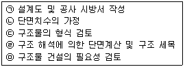
- ㉤ → ㉡ → ㉢ → ㉣ → ㉠
- ㉤ → ㉢ → ㉡ → ㉣ → ㉠
- ㉤ → ㉠ → ㉢ → ㉡ → ㉣
- ㉤ → ㉡ → ㉢ → ㉠ → ㉣
(정답률: 39%)
31. CAD 작업의 특징으로 옳지 않은 것은?
- 도면의 수정, 보완이 편리하다.
- 도면의 관리, 보관이 편리하다.
- 도면의 분석, 제작이 정확하다.
- 도면의 크기 설정, 축척 변경이 어렵다.
(정답률: 82%)
32. 하천 측량 제도에 포함되지 않는 것은?
- 평면도
- 구조도
- 종단면도
- 횡단면도
(정답률: 43%)
33. 하나의 시점과 물체의 각 점을 방사선으로 이어서 그리는 도법은?
- 투시도법
- 구조 투상도법
- 부등각 투상법
- 축측 투상도법
(정답률: 51%)
34. 다음 중 콘크리트를 표시하는 기호는?
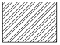
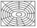
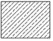
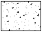
(정답률: 78%)
35. 치수 기입 중 SR40 이 의미하는 것은?
- 반지름 40㎜인 원
- 반지름 40㎜인 구
- 한변이 40㎜인 정사각형
- 한변이 40㎜인 정삼각형
(정답률: 68%)
36. 컴퓨터 하드웨어의 처리절차에서 괄호에 가장 적당한 것은?
- 처리
- 저장
- 명령
- 이동
(정답률: 58%)
37. 물체를 '눈 → 투상면 → 물체' 의 순서로 놓는 정투상법은?
- 제1각법
- 제2각법
- 제3각법
- 제4각법
(정답률: 69%)
38. 다음 중 보통의 공장 리벳 표시로 알맞은 것은?
- ×
- ○
- ◎
(정답률: 34%)
39. 그림은 무엇을 작도하기 위한 것인?
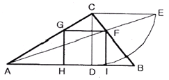
- 사각형에 외접하는 최소 삼각형
- 사각형에 외접하는 최대 삼각형
- 삼각형에 내접하는 최대 정사각형
- 삼각형에 내접하는 최소 직사각형
(정답률: 64%)
40. 투상법은 보는 방법과 그리는 방법에 따라 여러 가지 종류가 있는데, 투상법의 종류가 아닌 것은?
- 정투상법
- 사투상법
- 등각 투상법
- 구조 투상법
(정답률: 74%)
3과목: 토목일반구조
41. CAD시스템에서 입력 장치에 포함되지 않는 것은?
- 태블릿
- 키보드
- 디지타이져
- 플로터
(정답률: 71%)
42. 선의 종류 중 보이지 않는 부분의 모양을 표시할 때 사용하는 선은?
- 일점쇄선
- 파선
- 이점쇄선
- 실선
(정답률: 86%)
43. 제도에 대한 일반적인 설명으로 옳지 않은 것은?
- 그림은 간단히 하고, 중복을 피한다.
- 대칭적인 것은 중심선의 한쪽을 외형도, 반대쪽을 단면도로 표시하는 것을 원칙으로 한다.
- 경사면을 가진 구조물에서 그 경사면의 모양을 표시하기 위하여 경사면 부분의 보조도를 넣을 수 있다.
- 보이는 부분은 파선으로 표시하고 숨겨진 부분은 실선으로 표시한다.
(정답률: 81%)
44. 콘크리트 구조물의 도면 중 구조물 전체의 개략적인 모양을 표시한 도면에 해당하는 것은?
- 일반도
- 상세도
- 구조도
- 배근도
(정답률: 59%)
45. 도면을 철하기 위한 구멍 뚫기의 여유를 설치할 때 최소 나비는?
- 5㎜
- 10㎜
- 15㎜
- 20㎜
(정답률: 38%)
46. 치수 기호에서 지름을 나타내는 것은?
- R
- ø
- t
- C
(정답률: 69%)
47. 척도에 대한 설명으로 옳지 않은 것은?
- 현척은 1:1을 의미한다.
- 척도의 종류는 축척, 현척, 배척이 있다.
- 척도는 "대상물의 실제 치수"에 대한 "도면에 표시한 대상물"의 비로 나타낸다.
- 구조선도, 조립도, 배치도 등의 치수를 읽을 필요가 없는 것의 척도도 반드시 표시하여야 한다.
(정답률: 66%)
48. 도면 작도에서 중심선을 나타내는 기호(약자)는?
- C.L.
- C.l.
- M.L.
- M.l.
(정답률: 70%)
49. 철근의 물량 산출 방법에 대한 설명으로 옳지 않은 것은?
- 철근 상세도에 의해 철근 종류별로 산출한다.
- 총 중량에 대한 할증을 원형 철근은 15%를 가산해서 계산한다.
- 배근도와 상세도에서 C.T.C와 철근 숫자로 철근의 수량을 계산한다.
- 철근의 직경에 따라 총 길이와 철근의 단위중량을 곱해서 총 중량을 계산한다.
(정답률: 46%)
50. 긴 부재의 절단면 표시 중 파이프의 절단면 표시로 옳은 것은?
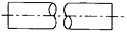
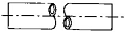
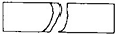
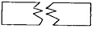
(정답률: 72%)
51. 제도 통칙에서 제도 용지의 세로와 가로의 비로 옳은 것은?
- 1 : √2
- 1 : 1.5
- 1 : √3
- 1 : 2
(정답률: 87%)
52. 리벳 이음에 대한 설명으로 옳지 않은 것은?
- 리벳 기호는 리벳선 옆에 기입한다.
- 현장 리벳은 그 기호를 생략하지 않는다.
- 축이 투상면에 나란한 리벳은 그리지 않음을 원칙으로 한다.
- 도면에 다른 리벳을 사용할 경우 리벳마다 그 지름을 기입한다.
(정답률: 21%)
53. 철근, PC 강재 등 설계상 필요한 여러 가지 재료의 모양, 품질 등을 표시한 도면으로 현장에서 철근의 가공, 배치 등을 행하는 데 중요한 도면은?
- 구조도
- 일반도
- 설계도
- 상세도
(정답률: 25%)
54. 도면의 복사도 종류가 아닌 것은?
- 청사진
- 홍사진
- 백사진
- 마이크로 사진
(정답률: 58%)
55. 큰 도면을 접을 때 기준이 되는 도면의 크기는?
- A0
- A1
- A3
- A4
(정답률: 82%)
56. 직선의 길이를 측정하지 않고 선분 AB를 5등분하는 그림이다. 두 번째에 해당하는 작업은?
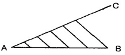
- 평행선 긋기
- 임의의 선분(AC) 긋기
- 선분 AC를 임의의 길이로 5등분
- 선분 AB를 임의의 길이로 다섯 개 나누기
(정답률: 59%)
57. 토목 제도에서 가는 일점 쇄선을 사용해야 하는 선은?
- 외형선
- 치수선
- 중심선
- 치수 보조선
(정답률: 68%)
58. 치수 기입에 대한 설명 중 옳지 않은 것은?
- 치수는 도면상에서 다른 선에 의해 겹치거나 교차되거나 분리되지 않게 기입한다.
- 가로 치수는 치수선의 아래쪽에, 세로 치수는 치수선의 오른쪽에 쓴다.
- 협소한 구간이 연속될 때에는 치수선의 위쪽과 아래쪽에 번갈아 치수를 기입할 수 있다.
- 경사는 백분율 또는 천분율로 표시할 수 있으며 경사 방향 표시는 하향경사 쪽으로 표시한다.
(정답률: 52%)
59. 아래 그림의 재료 단면의 경계 표시는 무엇을 나타내는 것인가?
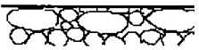
- 흙
- 호박돌
- 석재
- 잡석
(정답률: 67%)
60. 철근의 표기법 중 “24@200=4800”의 의미를 바르게 설명한 것은?
- 전장 4800㎜를 200㎜로 24등분
- 반지름 24㎜의 원형 철근을 200개 배치
- 지름 24㎜의 원형 철근을 200개 배치
- 반지름 200㎜ 원형 철근을 24개 배치
(정답률: 68%)